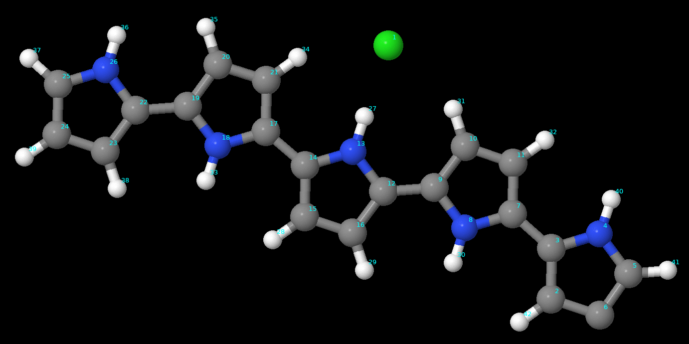

Simulating, Fabricating and Controlling a PneuNets-Gripper
Eulalie Coevoet, Damien Marchal, Olivier Goury, and Marwa ElDiwiny
This tutorial is about designing, simulating and fabricating a soft gripper made with PneuNets actuators in Sofa-SR. Sofa-SR is a modeling, simulation and control environment for soft robotics using the simulation framework Sofa for rigid and deformable mechanics, and the plugin SoftRobots. PneuNets (pneumatic networks) are a class of soft actuator originally developed by the Whitesides Research Group at Harvard. They are made up of a series of channels and chambers inside an elastomer. These channels inflate when pressurized, creating motion. With three of such actuators it is possible to make a soft gripper.
Atomistic Modelling and Simulation of Ionic Conducting Polymer
Tarmo Tamm, Marwa ElDiwiny

In this project we working on atomistic modelling of ionic electro active polymer to derive the deriving force field formula.
I founded and hosted the soft robotics podcast since 2019, we have a frequent listener from more than 70 countries with more than 1k subscriber and 900 download and 100k plays
Podcasting
Soft Robotics With Hod Lipson
Interesting discussion with Hod Lipson, the head of Creative Machines Lab, Columbia University in New York. In this episode, Can robots be Self-aware? Can robots design other robots and self-repair? Why should we evolve robots to do tasks that animals do so well? VoxCAD development for designing and simulation Soft Robots. Why don’t we have useful autonomous robots in the real world yet?" How do you approach the ethical dilemma of military funding scientific research? I hope you enjoy listening to the episode.
"What Is Missing For Spot Boston Dynamics And Should Applied In The Next Generation?"
Brian Ringley "What Is Missing For Spot Boston Dynamics And Should Applied In The Next Generation?"
Sangbae Kim "MIT Cheetah Robot Generations"
It was a pleasure to have Sangbae Kim, the head of the Biomimetic Robotics Laboratory at MIT about legged robots locomotion and MIT cheetah generation. I hope you enjoy listening!
Interests
Drawing female characters in few seconds, designing dresses, reading, passionate about acquainting different cultures.